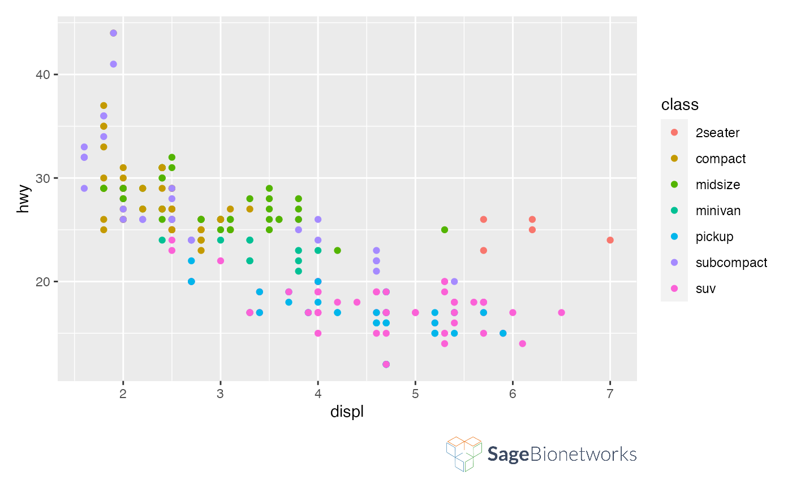
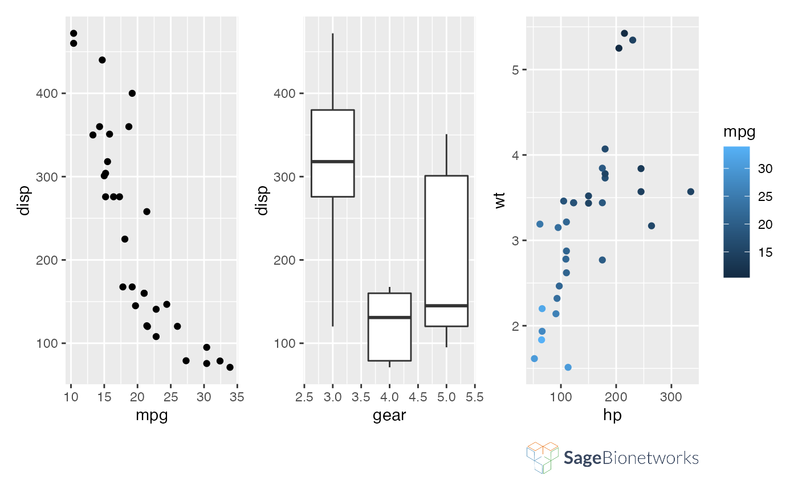
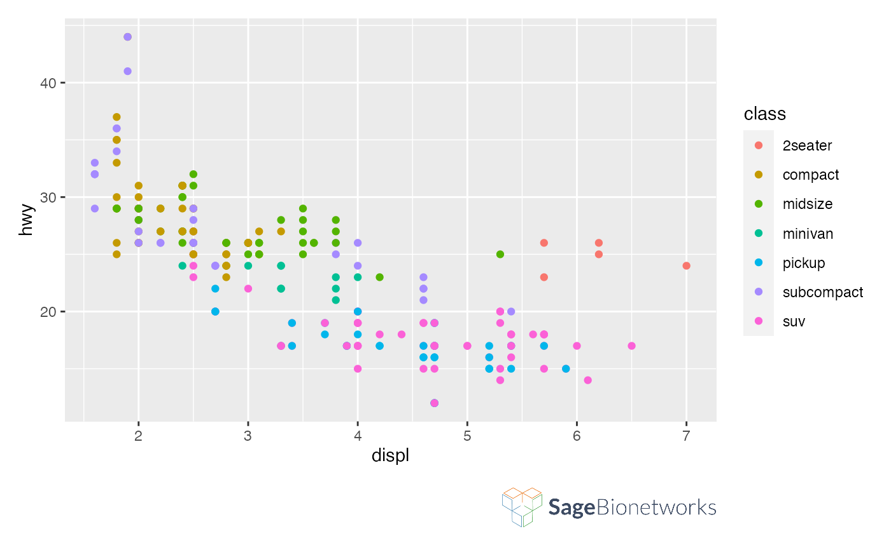

logo_image() places an image on the drawing canvas. This function is not
intended to be used on its own, but instead should be added to a ggplot2 plot
to add a logo to the plot. logo_layout() arranges the plot and image so
that the image is in the bottom right. The default layout can be overridden
if, for example, you are adding a logo to a patchwork of multiple plots.
Sets up the layout for a plot combined with a logo image.
logo_image( image = system.file("SageBionetworks-Logo.png", package = "sagethemes") ) logo_layout(ncol = 1, heights = c(1, 0.1), design = "AAAAAA\n####BB", ...)
| image | Path to image file to be added |
|---|---|
| ncol | The dimensions of the grid to create - if both are |
| heights | The relative widths and heights of each column and row in the grid. Will get repeated to match the dimensions of the grid. |
| design | Specification of the location of areas in the layout. Can either
be specified as a text string or by concatenating calls to |
| ... | Additional parameters passed to |
#> Warning: package ‘patchwork’ was built under R version 4.0.2# When adding logos to more complex figures, you may want to customize # logo_layout() (or use patchwork::plot_layout() directly) p1 <- ggplot(mtcars) + geom_point(aes(mpg, disp)) p2 <- ggplot(mtcars) + geom_boxplot(aes(gear, disp, group = gear)) p3 <- ggplot(mtcars) + geom_point(aes(hp, wt, colour = mpg)) p1 + p2 + p3 + logo_image() + logo_layout(ncol = 3, nrow = 2, design = "AABBCC\n####DD")# By default, the logo size will scale as you resize the plotting window. You # can instead choose to keep its size constant and let only the plot size # scale: ggplot(mpg, aes(displ, hwy, colour = class)) + geom_point() + logo_image() + logo_layout(heights = unit(c(1, 1), c('null', 'cm')))